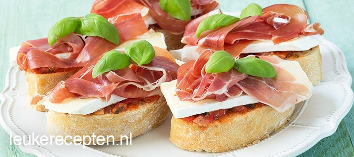

Bruschetta’s met brie
Deze makkelijke bruschetta’s zijn snel klaar en vormen een heerlijk voorgerecht of hapje.
Ingedriënten
- 6 sneetjes ciabatta brood (of stokbrood)
- 150 gram tomatentapenade
- 6 stukjes brie
- 6 plakjes serranoham
- 12 blaadjes basilicum
Bereidingswijze
- Besmeer de sneetjes ciabatta royaal met tomatentapenade.
- Leg op alle sneetjes een stukje brie en vervolgens een plakje serranoham.
- Maak de bruschetta’s af met basilicum.

Tip: Rooster het brood in een pan of oven voor een krokante basis.